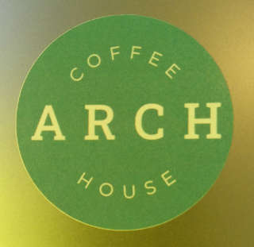

| Name | Activity |
|---|---|
| Andi | Fridays 5:30pm in Starbucks, Lansdowne. - Summer School arrivals (18+), freshers and new friends. |
| Andi |  Saturdays 1:00pm in Arch Coffee House, Holdenhurst Road, Lansdowne. - All welcome. |
| Andi | Saturdays 7:00pm in Elstead Hotel - Christian Social Club. Open to all. Supported by members of Lansdowne Church, Bournemouth International Church, Coastline Vineyard Church and others. |
| Question | AECC | AUB | BU |
|---|---|---|---|
| How many stalls and events were run? | None | None | Refused |
| How many of these were run by Neurodiverse staff? | N/A | N/A | Refused |
| How many of these were run by Neurodiverse students? | N/A | N/A | Refused |
| If possible, please provide an estimate of how many people attended these events. | N/A | N/A | Refused |